! The funny little road that goes from Dublin to Derry! Hold on, why are parts of this road just a wee bit above standard?
! The funny little road that goes from Dublin to Derry! Hold on, why are parts of this road just a wee bit above standard?
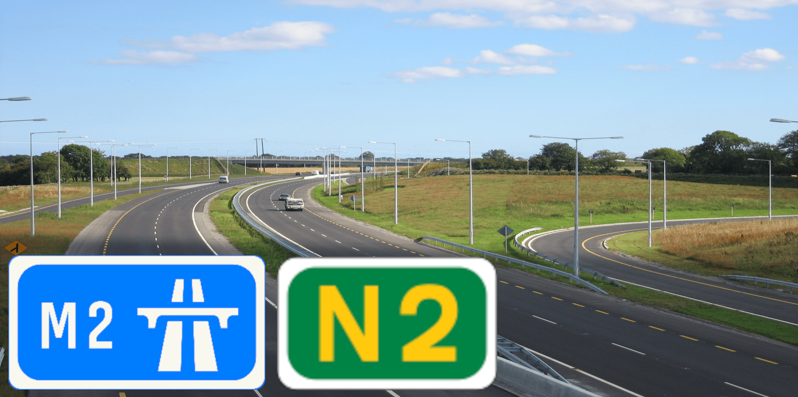
! The funny little road that goes from Dublin to Derry! Hold on, why are parts of this road just a wee bit above standard?The quality of the varies by which parts you are talking about. For example, if you are talking about the Castleblayney Bypass, the road quality is, eh. BUT! If you are talking about the ... It's much better than the Castleblayney Bypass by a LOT!
However, if you are talking about the part of around where Slane is then... Oh.
Take a quick look at the street view below.
Do you see the problem with traffic? I mean, look at it! Traffic light on both ends of the bridge, ONE LANE AND ONE WAY AT A TIME??? This is worse than a construction site!
FINALLY a bypass for Slane is being built, to keep traffic away from the Slane Bridge and Slane itself. And the original intersection between the and the
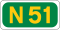
? It's getting replaced by a much better one for pedestrians and vehicles. Learn more here.30 km/h signs are added around a kilometer from the Slane Bridge to prevent accidents happening (from Ashbourne directions). But the 30 km/h signs (from Ardee direction), are around 500m away from the Slane Bridge
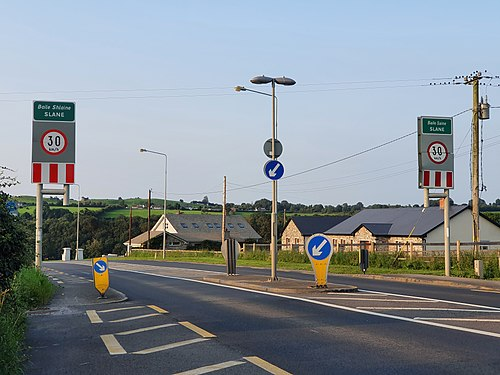
From Ashbourne direction.
You see it now??
Thank GOD it's getting replaced with a different (not 1-lane) bridge (it's dual-carriageway too)!
After Slane (towards Derry), the road quality is much better than THAT PESKY LITTLE BRIDGE, and after a small stop at Collon, we arrive at Ardee. Now, there isn't much of a bypass for Ardee, but at least there isn't a 1-lane bridge. Just after Ardee, the  meets up with the road, connecting with Dunleer. This is also where most Dublin traffic comes from, bypassing Slane and the all together. This is also where the
meets up with the road, connecting with Dunleer. This is also where most Dublin traffic comes from, bypassing Slane and the all together. This is also where the  meets up and goes through, the country-ish-road that goes from Nenagh (with the
meets up and goes through, the country-ish-road that goes from Nenagh (with the
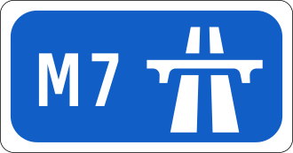
nearby) to Dundalk. A bit later in County Monaghan is where most of the bypasses are strangely. The bypasses Carrickmacross by the east, which opened in 31 January 2005. The road is a single-carriageway and named "The Kavanagh Way", named after Monaghan writer, Patrick Kavanagh. The route later on bypasses Castleblayney and Clontibret toward Monaghan. These roads are just named "Castleblayney Bypass" and "Clontibret Bypass". In Monaghan, a bypass to the east was built and opened at the 25th September 2006. At the north of the town, the  meets with the road, which goes east towards Armagh and eventually becomes the
meets with the road, which goes east towards Armagh and eventually becomes the  toward Armagh and Belfast. After Monaghan, the road goes through Emyvale, then becomes the
toward Armagh and Belfast. After Monaghan, the road goes through Emyvale, then becomes the  towards Omagh and Derry.
towards Omagh and Derry.
Upgrade projects completed (and under construction!) on the have always been a thing. Infact, there's a whole plan to replace the entire and with dual-carriageway!
Here's a quick list of all the completed projects so far!
And here's a list of upcoming plans for the road so far!
Approved in bold.
Disapproved in italic.
Neither approved or disapproved in normal text
95.5km (59.3mi)
3.5km (2.1mi) of dual-carriageway
Country: Ireland
Provences:
Counties:
Primary Destinations:
Bypassed routes in bold.
Primary

13km (8.1mi)
Country: Ireland
Provences:
Counties
Primary Destinations:
Bypassed routes in bold.
Motorway
The 's quality was much worse back then pre-2004. You had Slane road quality (NOT the Slane Bridge), but on the whole road.
The (which originally just going to be the and was for a while) was being discussed just post-2000. The section of motorway-standard dual-carriageway had been opened in 2004, and at the 28th August 2009, the dual-carriageway had been upgraded to a motorway (in this case, the .)
From Junction 4 to 1
.This road-map only shows the dual-carriageway sections of the , due to the length of the road being over 50km (31mi), we cannot document every major intersection/turn on the because that will take too much time and effort to create, that it is not worth it.
Thank you for your understanding.
| Derry |
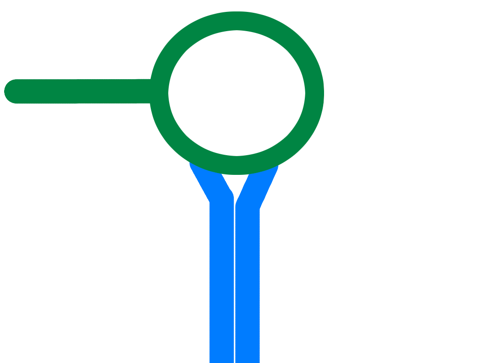 |
Ashbourne |
| Ratoath 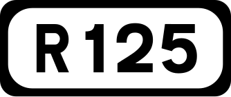 |
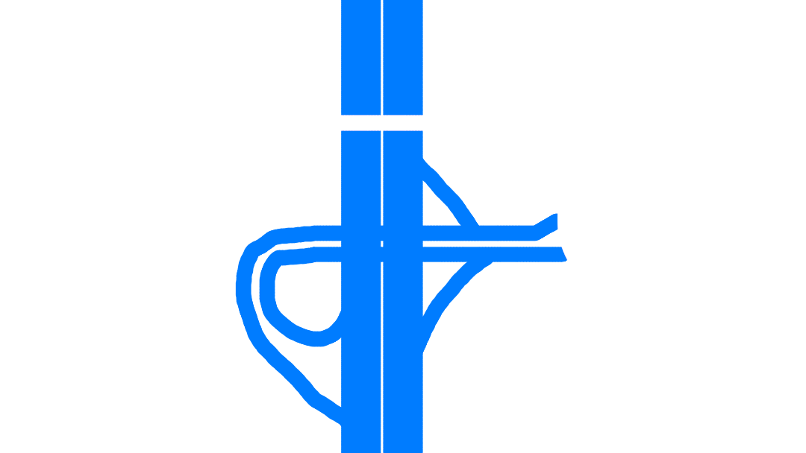 |
Ashbourne Swords Coolquay |
| Tyrrelstown ( 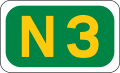 ) |
Saint Margaret's () |
|
| Coldwinters | Kilshane | |
 SOUTHBOUND SOUTHBOUND |
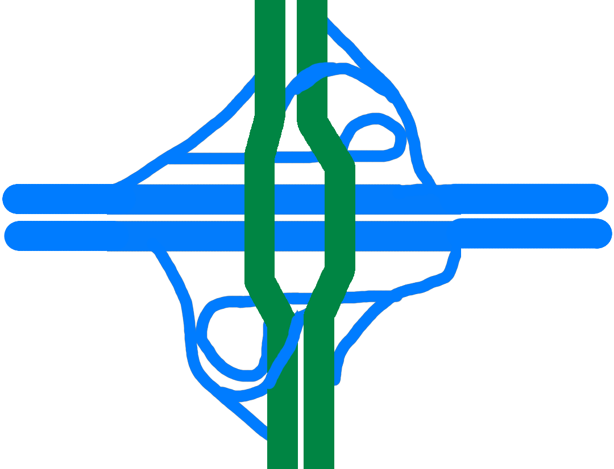 |
NORTHBOUND |
| Commercial Area | Charlestown Place | |
Saint Margaret's  |
||
| Finglas 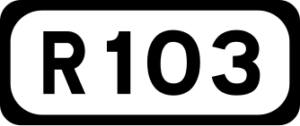 |
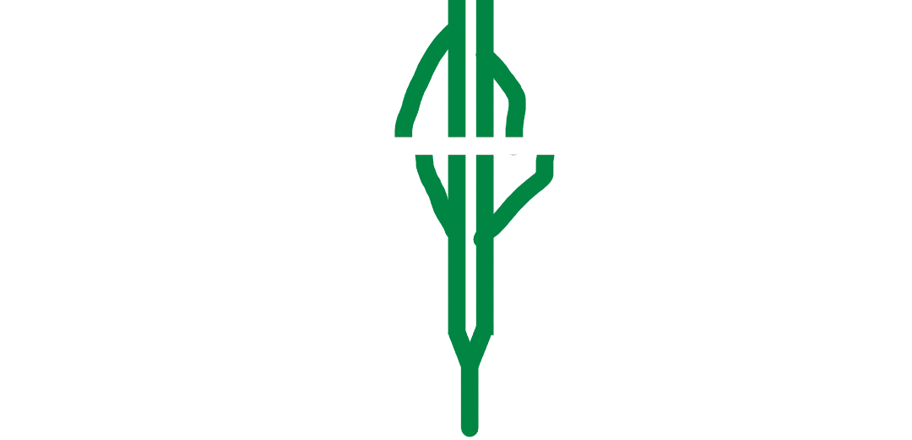 |
Dublin Port |

{kind=link}